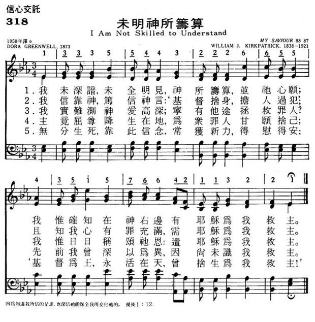

|
|
|
|
1 I am not skilled to understand 2 I take Him at His word indeed: 3 That He should leave His place on high 4 And oh, that He fulfilled may see 5 Yes, living, dying, let me bring Amen. |
318未明神所筹算
1.我未深谙，未全明见，神所筹算，
并祂心愿，我惟确知在神右边， 有耶稣为我救主。 2.我信靠神,笃信神言,基督舍身, 担人过犯,且知我心有罪充满, 需耶稣为我救主。 3.我实难测,神爱高深,宁有他途, 拯救罪人,我惟日日称赞祂恩, 遣耶稣为我救主。 4.主竟屈尊,降生在地,为众罪人, 甘愿舍己,先前我曾,深以为异, 因尚未识我救主。 5.无分生死,靠此信念,常获新力, 得慰得安,基督为王,永活在天, 曾舍生为我救主。 |
|
https://www.mred365.cn/szxg/7321.html
 https://hymnary.org/hymn/WASH1957/page/58
|
|
|
|
|

-

https://www.youtube.com/watch?v=bRUFg9_Lq-w
LX1779
I Am Not Skilled To
Understand
318未明神所筹算
| Text: | I Am Not Skilled to Understand |
| Author: | Dora Greenwell, 1821-1882 |
| Tune: | [I am not skilled to understand] |
| Composer: | William J. Kirkpatrick, 1838-1921 |
| Short Name: | Dora Greenwell |
| Full Name: | Greenwell, Dora, 1821-1882 |
| Birth Year: | 1821 |
| Death Year: | 1882 |
Greenwell, Dorothy,
commonly known as "Dora Greenwell," was born at Greenwell Ford, Durham, in 1821; resided at Ovingham Rectory, Northumberland (1848); Golborne Rectory, Lancashire; Durham (1854), and Clifton, near Bristol, where she died in 1882. Her works include Poems, 1848; The Patience of Hope, 1861; The Life of Lacordaire; A Present Heaven; Two Friends; Songs of Salvation, 1874, &c. Her Life, by W. Dorling, was published in 1885.
-- John Julian, Dictionary of Hymnology
Tune Information
| Title: | GREENWELL (Kirkpatrick) |
| Composer: | William J. Kirkpatrick (1885) |
| Meter: | 8.8.8.7 |
| Incipit: | 13335 54432 22665 |
| Key: | D Major |
| Copyright: | Public Domain |

Words: Dorothy (“Dora”) Greenwell (b. Dec. 6, 1821; d.
Mar. 29, 1882)
Music: Greenwell, by William James Kirkpatrick (b. Feb. 27,
1838; d. Sept. 20, 1921)
Links:
Wordwise Hymns
The Cyber
Hymnal
Note: English poetess Dora Greenwell published fourteen books of verse during her lifetime. On the title page of each volume was a crest picturing a hand holding tightly to a cross. The accompanying Latin motto, “Et teneo et teneor”, expresses a profound truth: “I both hold and am being held.” In faith, believers cling to God, but we are assured also that He will never let go of His child (Jn. 10:28-29).
In one of her books, called Songs of Salvation (published in 1873), are eight of Miss Greenwell’s poems. One of them has become a hymn now found in many hymnals. Though we usually know it by the opening line, in his Sacred Songs and Solos, Ira Sankey entitled the song “My Refuge, My Saviour,” taking these words from Second Samuel 22:3.
Many of us enjoy watching or listening to those who demonstrate great skill at something. Whether it’s a baseball player a piano player, or something else, we admire the hours of training and practice, and the natural talent, that combine to make a superb athlete or musician. On another front, an area of developed skill that’s important to every Christian is the ability to study and understand the Word of God.
“Be diligent to present yourself approved to God, a worker who does not need to be ashamed, rightly dividing [correctly handling] the word of truth” (II Tim. 2:15; cf. Ps. 1:1-3).
The problem is that fallen man does not have the spiritual perception to understand the Word of God, or the power to apply and obey it, even if he could grasp its meaning.
“The natural man [one born naturally, but not born again] does not receive the things of the Spirit of God, for they are foolishness to him; nor can he know them, because they are spiritually discerned” (I Cor. 2:14).
Regeneration and the indwelling Holy Spirit change that. He is “the Spirit of truth” (Jn. 15:26). He is the Revealer and Illuminator of God’s Word (Jn. 14:26; 16:13-15).
“‘Eye has not seen, nor ear heard, nor have entered into the heart of man the things which God has prepared for those who love Him.’ But God has revealed them to us through His Spirit. For the Spirit searches all things, yes, the deep things of God” (I Cor. 2:9-10).
But there’s a further difficulty with that. God is infinite; we are finite. Even with the illumination of the indwelling Holy Spirit, we Christians are going to find many things that are beyond our reach, when it comes to the spiritual and eternal realm, and particularly when it has to do with the transcendent Godhead.
“Great is our Lord, and mighty in power; His understanding is infinite” (Ps. 147:5). Job was a great saint, with an understanding of God that was way ahead of his time. Yet he says at one point: “Indeed these are the mere edges of His ways, and how small a whisper we hear of Him! But the thunder of His power who can understand?” (Job 26:14).
Even so, this does not, as the saying goes, let us off the hook. We are still called upon to study and seek to know what we can, and we are responsible to apply what we know, and respond to what we know (cf. Heb. 5:11-14). That is the thrust of Dora Greenwell’s hymn.
CH-1) I am not skilled to understand
What God hath willed, what God hath planned;
I only know at His right hand
Is One who is my Saviour!
CH-2) I take Him at His word indeed;
“Christ died for sinners”–this I read;
For in my heart I find a need
Of Him to be my Saviour!
The author rejoices in the knowledge of who Christ is, and what He’s done for her. And the hymn recognizes that we can “grow in the grace and knowledge of our Lord and Saviour Jesus Christ” (II Pet. 3:18). We can learn more.
CH-3) That He should leave His place on high
And come for sinful man to die,
You count it strange? So once did I,
Before I knew my Saviour!
The Apostle Paul prayed for the Ephesian believers that they would “know the love of Christ that passes [surpasses] knowledge” (Eph. 3:19). Even though He is infinitely beyond us, it will be the delight of time and eternity to continue to learn more and more.
CH-4) And oh, that He fulfilled may see
The travail of His soul in me,
And with His work contented be,
As I with my dear Saviour!
Questions:
1) If you were to take an inventory, what do you know in terms of
spiritual truth, and your knowledge of God, that you didn’t know a year
ago?
2) What have you done with what you’ve learned”